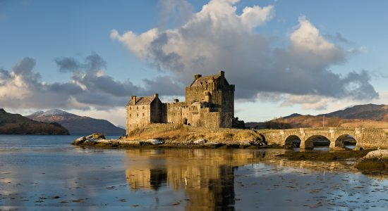

Oda do Madzi

Oh Magdaleno! Co jasnej bronisz Częstochowy! Co wprawiasz mnie o zawrót głowy! Swym pięknem i swoim urokiem, Chronisz mnie przed zimnym mrokiem! Gdy Twa lica staje przede mną, Wszystkie me obawy od razu legną. Tęsknię i Cierpię bóle ogromnie, I czekam aż trafisz znów do mnie.
Autor: Pawel Poleszczuk
Bul

Bul.
Bul.
BUL!
Bo Madzi nie ma
Więc Bul.
Ogromny
I chłodny
Bul.
Autor: Pawel Poleszczuk
Kota
Nie rzucim ziemi, skąd kotki
Nie damy pogrzeć miałknięć
Koci nasz naród, koci ród
Królewski, Balcusiowy
Autor: Pawel Poleszczuk